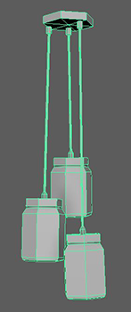
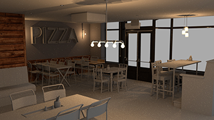

This project is an attempt to recreate a real life bar into a model inside AutoDesk Maya and attempt to produce the realism of the world inside a modeling software. There were three main stages to the project. The first stage was preparation, images of
the bar and sketches with real world measurements of the chairs tables and heights so that I would be able to have a good scale when modelling. The second stage was creating geometry and arranging everything. Lastly lighting and texturing
to give the room a correct aesthetic and capture material details.There are some more details and images for stages two and three below.
Geometry
For geometry I wanted to have one rule in mind before starting. I am generally interested in game development and therefore I wanted to try recreate geometry with very few necessary triangles allowing for a smooth performance efficient object
creation without sacrificing on object detail. Some of the major techniques used are listed below.
Box Modelling: This technique was used for the most basic shapes found in the scene, such as the walls, the windows and the top of the tables. It was also used to setup a basic prototype for some of the more complex objects
such as doors, or some of the table legs.
Curves: Curves were mainly used in flowing shapes and highly detailed curving shapes in the scene, the best example of this is the logs of the chair show in Figure 1 and in the chair’s seat since the irregularity
of that shape could be captured best by the use of curves. Another great example of this is in the lights inside the ”PIZZA” writing on the wall Figure 2. Generating curves from the type tool, and extruding a circle along
those curves allowed me to create the small lights in the shape of letters.
Figure 1
Figure 2
Loft: The Loft tool was used in the creation of the more detailed table legs and chair legs in the middle of the scene since
Figure 3. Starting of with a circle, duplicating it and scaling it in order to create the desired outline, then using loft to create the desired shape.
Figure 3
Beveling: Beveling was applied to everything, but it was also used to achieve some small curved sections, or smooth out some of the hard edges of some of the objects Figure 4. Beveling was used
carefully by selecting specific edges and applying a bevel only to them. For example objects have bevel effects applied differently to each edge where necessary to get the form of the object correct and realistic.
Figure 4
Multicut tool and Component manipulation: This technique was also applied to every object in the scene, it was used for simple reasons such as to scale objects to the appropriate dimensions or even get some irregular
shapes, but also to merge vertices and manipulate polygons in order to create a detailed representation Figure 5. Multicut tool was used in conjunction with this to add edge loops or create extra vertices necessary
to manipulate the objects and add further details.
Figure 5
More Images:
Figure 6

Figure 7
Figure 8
Figure 9
Figure 10
Figure 11
Geometry result: Using Arnold renderer and ambient occlusion shader to visualize the results.
Figure 12
Lighting, Shading and Texturing
Having the geometry ready and simple allowed me to focus my attention to texturing and shading to detail the objects, get the materials correct and fill the room with lighting that helps introduce a realistic effect into the image. The complete
process is described below.
Wooden Table Texture:Starting with the short, long tables I had to create a metallic black texture for the legs and middle and a wooden texture for the table top. I found and downloaded a wooden tileable texture
from Google images and proceeded to add it to the rectangle. Using Arnold standard surface shader, with a descend specularity value and a little bit of roughness, I started creating an appropriate material for the wooden texture,
shiny but wood-like. The first render of the texture was stretched and uneven, that meant that I had to work in the UV space of the object and properly setup the texture. Using automatic UV, the UV of the object unwrapped nicely
and I was able to scale it and set it to the correct position. A second render of the object showed that the texture was properly set and scaled but the material was looking very fake, it was just a projection of a 2D image on
top of the model. After some research, I came across some solutions including displacement maps and therefore I imported the texture image into Adobe Photoshop, changed it into black and white, and adjusted its histogram so that
the black and white image had a nice representation of the cracks and gaps inside the wooden texture. In Maya I applied the displacement map to the material, with a scale value of 0.001, small enough to make the texture still look
shiny and smooth but also add that extra bit of detail needed for realism (Figure 13). In addition, the metallic parts of the table were created from a dark metallic picture with a high diffuse roughness and roughness
value, the picture was barely visible but it still added some texture to the material to break that solid colour fake look.
Figure 13
Chairs and Wood Wall: The second set of textures I decided to tackle was the chair texture and a wooden wall pattern texture. Since I became familiar with the concept of tiled wood, I started creating a darker
wooden texture for two wall parts. This time I couldn’t Fig. 1. Tabletop wood texture with displacement Map find a suitable texture online, therefore I chose one that was as close to the one I wanted as possible and using Photoshop,
I added a trim to the end of the picture and created another black and white version for the displacement map. Importing the texture into Maya, the UV space was simple for the first section since it was covering the whole wall,
but for the section underneath the ”Pizza” light sign, I had to start cutting seams and creating my own UV shape of the wall so that I would be able to apply multiple textures to different parts of the object. After a while I had
it working for both wall sections Figure 14. The chair was much faster to texture, I created two textures one for the metal part and one for the wooden seat and back. Applying the smooth wooden texture to the seat
and back was simple and there was not much needed to get it working. The metal shader used was just a standard shader with some attributes changed to match the desired effect.

Figure 14
Wallpaper: Another challenge I faced was creating the unique wallpaper on the wall behind the ”Pizza” sign. The wallpaper consisted of many beer logos stacked in a grid. I thought that maybe 2 I could find the
seller of that wallpaper and then I could get the pattern so that it would be a seamless realistic texture to add for the wall. Searching the internet for that wallpaper yield no results, therefore I used an original picture of
the bar’s wall. Using Adobe Photoshop I cropped the image to a sensible location where the pattern seemed to be big enough and changed its perspective to face the front Figure 16 and 17. The UV space needed some
changes and some edge cuts in order to add the texture to a specific section of the wall without affecting any other part of the wall during the manipulation of its UV Figure 15.
Figure 15
Figure 16
Figure 17
Darker Table and Chairs: The next set of chairs and tables needed a different kind of wood and a mixture of smooth and tiled wood. Finding those different wood textures that match in colour was not easy and therefore downloaded
two similar coloured textures. Applying the smooth textured wood was simple and the UV space didn’t need any remapping. On the other hand applying the tiled wood and making it blend well with the darker smooth texture was challenging.
The solution was to add some more edges on the geometry to create a trim around the tiled wood texture, and then apply a colour remap filter inside the Hypershade window. The recipe to a realistic table was to tweak the colour values of
the input image allowed me to match the colours and together with displacement map for both textures. In addition, the chair seats had a dark leather texture and using the simple method of downloading a texture from Google, and applying
it, together with its black and white version for the displacement map, created a smooth simple leather seat texture Figures 18 and 19.
Figure 18
Figure 19
”PIZZA” light sign: The most challenging part texture was the ”Pizza” sign on the wall. From the reference pictures the sign frame is a reflective metallic, almost like stainless steel metal. I added that material
and then started working on the lights. The light tubes had a strange glow, the inside of the tubes was glowing with a yellow-orange colour while the reflections and the light coming from the sign was closer to a red colour. To
mimic the glow I applied emitting shaders on the tube geometry with a yellow-orange tint. Furthermore, using Arnold tools, I created lights from mesh for every tube and assigned those lights a red glow. The result was still not
good enough, the inside of the sign looked similar but the glow emitting from it was weak Figure 20. To address that problem, I added an area light, with a red glow to light the surrounding area with the red glow
and give that realistic look to that section of the room shown in the final render Figure 25.
Figure 20
Wall couch: The last challenging object that needed texturing was the couch facing the tall table. That couch had a very irregular geometry and its texture was composed of two parts, a smooth wood and a tiled wood
texture. In terms of working with UV space, this geometry was the most challenging. Cutting edges 3 and creating many separate UV shapes and then applying the appropriate textures to each part was very time consuming. In the end
after using some ”tricks” to add appropriate textures for each side of the couch, the finished result was similar to the original Figure 21.
Figure 21
Details: The remaining geometry left for texturing were small details, using the same process I textured the remaining walls, the window frames, doors, couch, AC and other small geometry shapes but from all of the details
the one I am most proud of is the salt and pepper. The containers are composed of two materials, glass and shiny silver but I also added an object inside them with corresponding salt and pepper textures, and displacement maps to create
the realistic look of salt and pepper containers Figure 22. In addition, the exit sign is also very detailed, composed of three materials, glass, metal and a picture of an actual exit sign attached to the bottom face and
using UV space to fit it to the appropriate location Figure 23.
Figure 22
Figure 23
Lighting: Finally after all textures and shading was completed, it was time to add lights and create the appropriate atmosphere for the space. I experimented with directional light, area lights, spot lights, skydome
and mesh lights.The final product consists of many different lights such as spotlights for each ceiling lamp there is with a very weak lighting effect but still there to improve realism. Also point lights for the rest of the lamps,
with a glass surrounding them in the shape of a lamp and produces a realistic effect of an actual lamp. Furthermore, there is an area light outside the windows shinning light in, that produces shadows and lights the area around
the window frames as light enters the interior space and the skydome’s intensity, colour and exposure was adjusted so that it produces an evening atmosphere that is starting to get dark outside, making the inside lights more effective
with the warm orangeyellow colour. Lastly in the render settings, to provide a small light fog effect I added atmosphere volume in the environment with a very low density Figure 24.
Figure 24
Final render 9 camera samples, 81 diffuse samples, 36 specular samples, 36 transmition samples and clamped at 10 indirect light samples